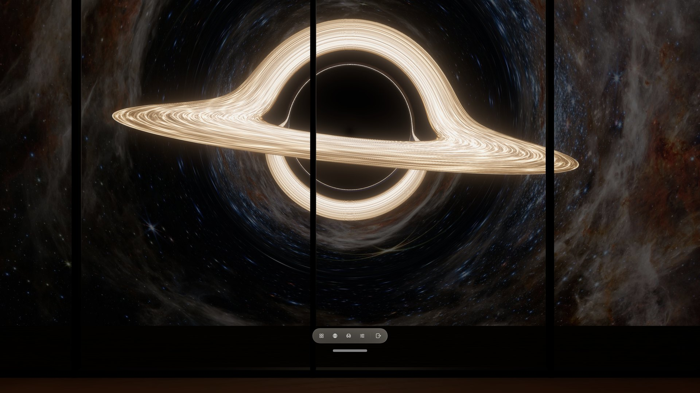
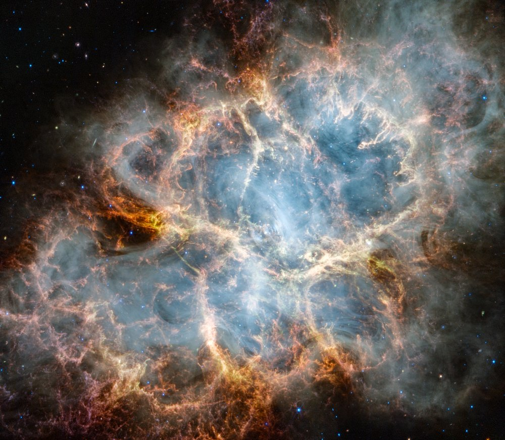
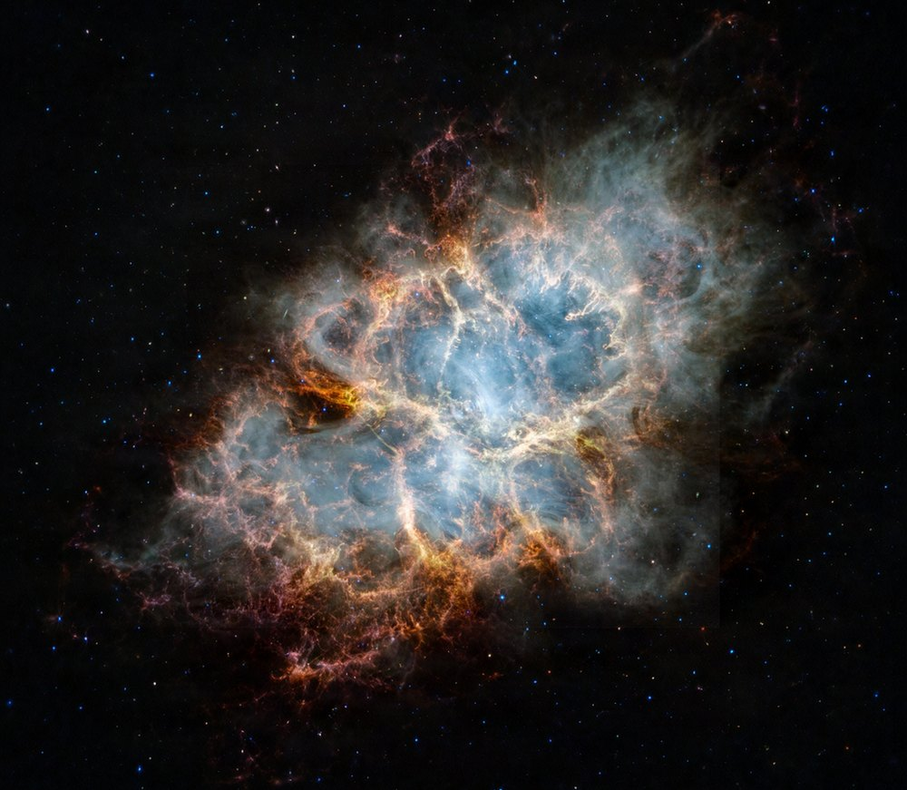
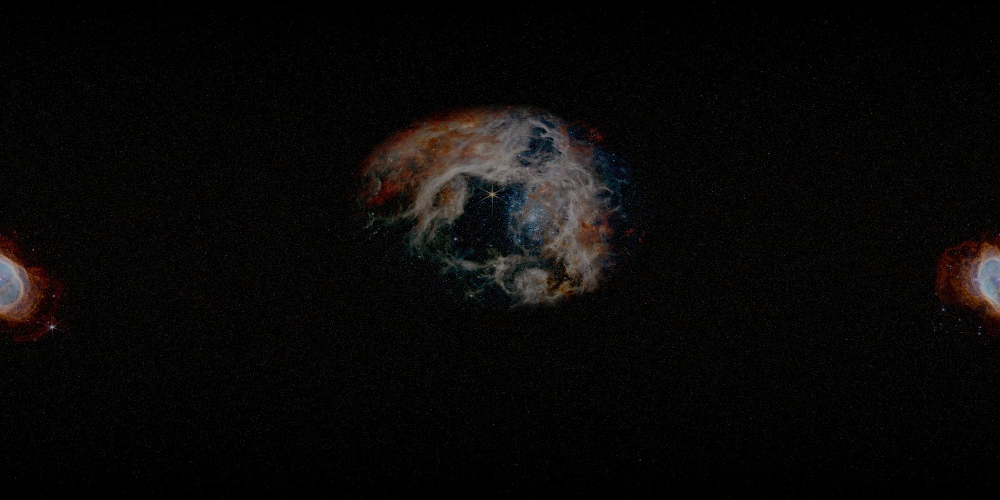
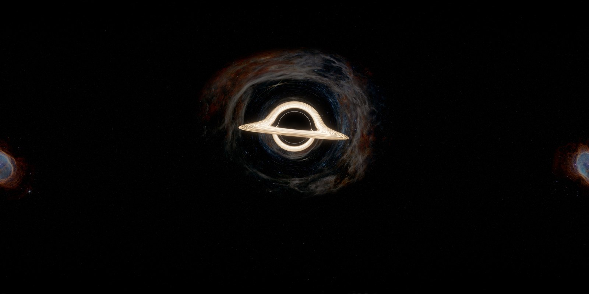
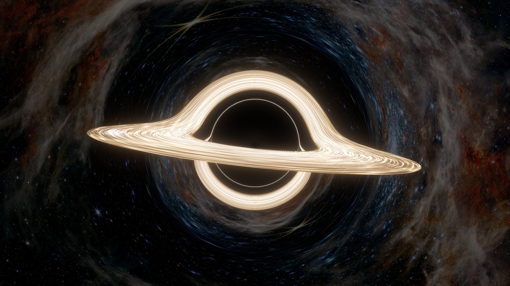
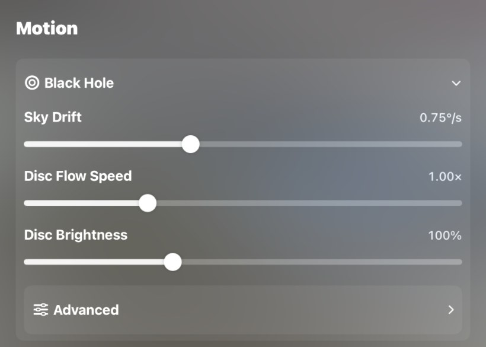
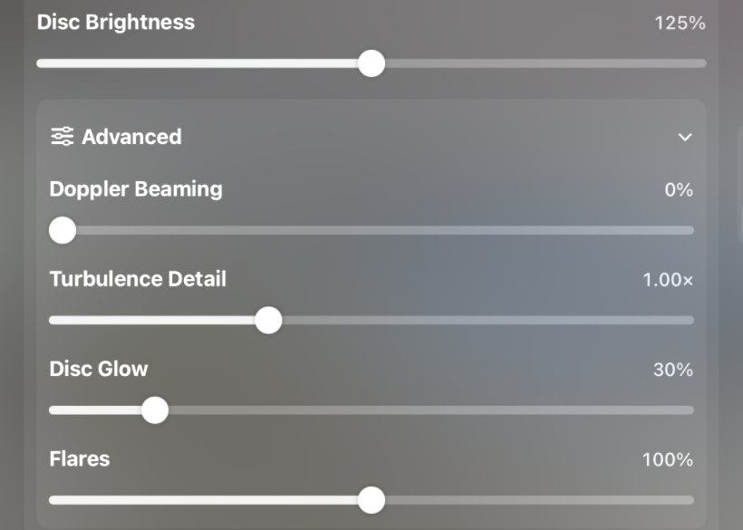

Advanced · About 45 minutes
Make your own black hole View.
Put a black hole in the sky around you: its dark shadow, a thin bright ring of light, and a glowing disc of gas whose far side is bent up over the top. You choose the nebulae, bake the scene on your computer with our free tools, and import it into Locus, which keeps the gas flowing around you.
Needs Locus 1.3.4 or later · Free tools · Apache 2.0
What you are making
A black-hole View is a complete Package v2 View with a blackHole profile. You sit still at a fixed distance from a non-spinning black hole, so everything about how gravity bends light can be worked out once, on your computer, before the View ever reaches Locus. Locus then only animates what changes over time: the gas orbiting in the disc, faster near the inner edge, a slow drift of the distant sky, short-lived flares and a soft glow. It never traces a ray on Apple Vision Pro.
- Computed from Einstein’s gravity: the size of the shadow, the thin photon ring at its edge, the image of the disc’s far side bent over and under the hole, and how the stars and nebulae behind it are stretched and doubled.
- Artistic choices: the disc’s colour and brightness, its turbulence, the flares and glow, how fast time runs (a real inner orbit takes anywhere from milliseconds to days, not the 10 seconds used here), and which nebulae you place in the sky.
- Not modelled: a spinning black hole, a thick or see-through disc, the light delay between images, and jets.
What you need
- Locus 1.3.4 or later on Apple Vision Pro. Black-hole Views first work in that version; older versions refuse the file with “This place requires Locus 1.3.4 or later”.
- A computer with Python 3.9 or later, plus NumPy and Pillow. On a Mac, install them with
python3 -m pip install numpy pillow. - The free tools. Get the tools/black_hole folder on GitHub, for example with
git clone https://github.com/EnterLocus/locus-support.git, then openlocus-support/tools/black_holein Terminal. The commands below run from that folder. - About 5 GB of free memory. A bake takes about a minute on an Apple M4 Pro Mac mini and mostly uses one core, so other recent Macs are similar.
- One or two nebula photos you are allowed to use, such as images from ESA/Webb.
- A free custom View slot. Everyone can keep one custom View. To add more, remove one or unlock More Imports.
- Optional:
ffmpegto turn preview frames into a video, and a fal.ai account if you want to try AI outpainting, which you must then disclose in the View’s provenance.
1 · Choose
Choose your nebulae
The sky behind the black hole is a procedural starfield with one or two nebula photos placed in it. Real nebulae are far fainter than a glowing disc, so they end up dimmed in the background. One photo usually sits right behind the hole, where the lens stretches it into arcs around the shadow; a second can sit exactly opposite so the drifting sky carries it behind the hole in turn.
- Prefer nebulae on black space. A photo whose cloud sits wholly inside the frame, with dark sky around it, blends in without any edge. The Southern Ring Nebula (weic2207b) is a good example.
- Watch out for frames. If the gas still glows at the photo’s edges, as in the Tarantula Nebula (weic2212a), the edge can show as a faint rectangle. The
fademode in step 2 softens it; outpainting removes it. - Avoid a coloured background. A photo whose whole sky is blue or brown haze shows a hard border wherever you place it.
- Irregular shapes read best. A very round nebula competes with the round shadow and ring.
On an ESA/Webb image page, download the Large JPEG, for example https://cdn.esawebb.org/archives/images/large/weic2212a.jpg. ESA/Webb images are under CC BY 4.0: credit them exactly as the image page asks, normally “NASA, ESA, CSA, and STScI”, without changing the wording, and say that you modified them. Keep the page address for your provenance in step 3.
Optional: give a nebula a dark margin with AI
If you love a nebula that glows to its edges, you can extend the photo with a generated margin that fades into black space. outpaint_fal.py keeps the photographed area unchanged in the middle of a larger canvas and asks Bria Expand on fal.ai to paint only the surroundings. It is optional and paid: it uses your own fal.ai key, costs about US$0.04 per run at the time of writing, and sends a smaller copy of the photo to fal.ai.


Crab Nebula: NASA, ESA, CSA, and STScI (CC BY 4.0), weic2326a; right, with a margin outpainted by Bria Expand.
export FAL_KEY=your-own-key # never commit or share it
python3 outpaint_fal.py ~/bh/weic2326a.jpg ~/bh/crab-expanded.png \
--confirm-paid \
--prompt "The Crab Nebula fading gradually into empty black space""aiGenerated": true and an "aiProvider" such as "Bria Expand (fal.ai), nebula margins only" in the recipe’s provenance, and say in modificationNotes what was generated. Locus rejects aiGenerated: true without a provider.Then place the outpainted file with fade in step 2, as you would the original photo.
2 · Compose
Compose the sky
compose_sky.py draws about 260,000 stars over the whole sphere and places your photos on it. The result is a flat 2:1 sky, as seen without the black hole.
python3 compose_sky.py ~/bh/sky.png \
--photo ~/bh/weic2212a.jpg,0,12,110,0.55,0.1,fade \
--photo ~/bh/weic2207b.jpg,180,-12,50,0.5,0.2,addEach --photo is PATH,YAW,ELEVATION,WIDTH,ROW,GAIN,MODE:
- YAW, ELEVATION place the photo’s centre, in degrees. Yaw 0 is straight ahead and positive yaw turns right. Put the photo you want behind the hole at the hole’s own direction (yaw 0, elevation 12 in the example recipe), and a second one exactly opposite: yaw + 180°, elevation negated.
- WIDTH is how many degrees wide the photo appears.
- ROW picks the image row that sits at the centre, from 0 (top) to 1 (bottom); 0.5 centres it.
- GAIN is brightness. 0.1 is about three stops darker than the photo.
- MODE decides how the photo meets the stars.
| Mode | What it does | Use it for |
|---|---|---|
add | Adds only the photo’s light above its own background level, so the stars show through the dark parts. | Nebulae photographed on black space. |
fade | Like add, then fades the photo to nothing toward its edges. | Nebulae that still glow at the edges, and outpainted photos. |
over | Replaces the stars inside a softened rectangle. | Rarely; only for a photo meant to fill its area completely. |
It takes about ten seconds. Open sky.png and check it: it should look very dark, with the nebulae faint against the stars.
3 · Recipe
Write a recipe
A recipe is a JSON file with your View’s name, the black hole’s settings, the bake resolution, and its provenance. Start from the example, which is the composition of Locus’s own Event Horizon: Ring:
cp recipes/ring.view.json ~/bh/my-ring.view.json- Give it your own identity. Change
destinationIDto a unique ID made of letters, digits, dots, dashes and underscores, such asdestination.alex-black-hole, and settitleandcaption. Keep the same ID for later versions and raisecontentVersioneach time. - Fill in the provenance. Replace “Your Name” with your name or studio; the baker refuses to run until you do. Name every photo you used in
requestedCreditandmodificationNotes, and setsourcePageURLto the main photo’s page. - Adjust the look with the settings below, or keep the example values for your first bake.
observerRadiusHow far you are from the hole, in units of its mass, 8–200. The horizon is at 2. Closer makes the shadow, ring and disc larger. Example: 30.yawDegrees,elevationDegreesWhere the hole sits around you. A small positive elevation lifts it just above eye level. Example: 0, 12.bake.Disc tilt: 90 is edge-on, 0 face-on. Around 80–85 gives the classic look, with the far side arched over the top. Example: 85.inclinationDegrees disc.,inner disc.Disc size. The inner edge is normally 6, the innermost stable orbit;outer outermust be at leastinner+ 1. Example: 6, 16.disc.Seconds for one orbit at the inner edge; outer gas moves more slowly. Example: 10.iscoPeriodSeconds disc.Colour of the hottest gas: lower is more golden, higher whiter and bluer. Example: 5200.peakTemperatureKelvin drift.How fast the distant sky turns, 0–2 °/s. At 0.3 a full turn takes 20 minutes, so the two nebulae take turns behind the hole. Example: 0.3.degreesPerSecond doppler0–1. Real gas looks brighter and bluer on the side moving toward you. 0 turns that off for an even, Interstellar-style disc; 1 is physical. Example: 0.glowSoft bloom around the disc, 0–2. An art layer, not physics. Example: 0.3.flaresOptional short-lived hot spots that orbit and fade. Remove the block for none. Example: every 5 s.bake.Field of view of the Places cover, which is centred on the hole. Larger fits a wider disc. Example: 76.thumbnailHfovDegrees
Leave disc.exposure out and the baker picks a brightness for you; bake.exposureScale scales it. The tools README lists every field.
4 · Bake
Bake the View
python3 bake_view.py ~/bh/my-ring.view.json \
--sky ~/bh/sky.png --out ~/bh/my-ring --stills 0,5,10The baker prints each stage. With the example recipe it takes about a minute: the lens table in a couple of seconds, the disc map in about 25, then the turbulence, glow and an 8K panorama. It writes a Package v2 folder:
my-ring/
├── locusplace.json
└── catalog/destinations/<your destinationID>/
├── destination.json # with the blackHole profile
├── panorama.jpg # the View at time zero
├── lighting.jpg
├── thumbnail.jpg # the Places cover
├── provenance.json
└── black-hole/
├── sky.jpg lens.png disc-map.png disc-texture.png glow.pngpanorama.jpg is exactly the first frame Locus shows, and the picture it keeps showing when motion is off. The other images let Locus animate the disc without tracing rays.


Tarantula Nebula (weic2212a) and Southern Ring Nebula (weic2207b): NASA, ESA, CSA, and STScI (CC BY 4.0), dimmed and lensed.
5 · Preview
Preview frames
--stills 0,5,10 renders 1920 × 1080 views centred on the hole at those seconds, into my-ring-stills. They use the same mathematics Locus uses on the packaged files, so they show what the moving disc will look like. To preview an existing bake, or an Edit View setting, use --view and --control:
python3 bake_view.py ~/bh/my-ring.view.json --view ~/bh/my-ring \
--stills 5 --control doppler=1
python3 bake_view.py ~/bh/my-ring.view.json --view ~/bh/my-ring \
--frames ~/bh/frames --seconds 20--frames writes a numbered PNG sequence, and reference.mp4 too if ffmpeg is installed. A 20-second sequence takes several minutes.

A flat preview cannot tell you how the View feels around you. Check brightness, motion and comfort on Apple Vision Pro after you import it.
6 · Pack
Pack and validate
python3 pack_view.py ~/bh/my-ring ~/bh/my-ring.locusplaceThe packer lists every file with its size and SHA-256 in locusplace.json, adds the package’s contentHash, writes the archive and then checks it much as Locus will when you import it. A good result ends with:
VALID: destination.alex-black-hole 1.0.0 (1 View) -> /Users/you/bh/my-ring.locusplaceIf something is wrong it prints INVALID: with the field to fix, and no archive is written. You can check an archive again at any time with python3 validate_view.py ~/bh/my-ring.locusplace. The extension can be .locusplace or .zip.
7 · Import
Import it into Locus
- Move the file to Apple Vision Pro, for example with AirDrop or by saving it to iCloud Drive.
- In Locus, open Places, then choose Import.
- Choose Import a View, then Files, and pick your
.locusplacefile. Locus checks it before installing anything. - Find it in Places under Views. Its card is marked Imported and shows your cover. Pair it with any Room, then choose Enter Place.
To replace it with a new version, raise contentVersion in the recipe, bake and pack again, and import the new file.
8 · In Locus
Adjust it in Edit View → Motion
In Places, open the menu for your View and choose Edit View. The Motion section has a Black Hole group. Your recipe’s values are the defaults, and changes are saved for this View.


Values shown are from a test build. Your View starts at your recipe’s values, for example Sky Drift 0.3 °/s.
| Control | Range | What it does |
|---|---|---|
| Sky Drift | 0–2 °/s | How fast the distant sky turns behind the hole. 0 holds it still. |
| Disc Flow Speed | 0.25–3× | How fast the gas and flares orbit. |
| Disc Brightness | 50–200% | Overall brightness of the disc. |
| Doppler Beaming (Advanced) | 0–100% | Makes the side moving toward you brighter and bluer, and the other side dimmer and redder. 100% is physical. |
| Turbulence Detail (Advanced) | 0.5–2× | Finer or coarser streaks in the gas. |
| Disc Glow (Advanced) | 0–200% | Strength of the bloom around the disc. Its colour follows the baked look, not later Doppler changes. |
| Flares (Advanced) | 0–200% | Brightness of the orbiting hot spots; 0 removes them. Shown only when the recipe has flares. |
Choose Reset All Changes in Edit View to return to your recipe’s values. If you like a setting enough to make it the default, put the same value in the recipe and bake again.
Troubleshooting
- “This place requires Locus 1.3.4 or later.” Update Locus from the App Store, then import again.
- The baker says to replace “Your Name”. Edit the recipe’s provenance first.
- The baker stops with “the disc is not visible”. The disc is outside the view or hidden by the shadow. Check
disc.inner,disc.outerandbake.inclinationDegrees. - A faint rectangle around a nebula. Use
addorfade, choose a photo on black space, or outpaint a margin. - The nebula is too bright or distracting. Lower its
GAINand compose the sky again. - The disc is blown out or too dim. Lower or raise
bake.exposureScale, or setdisc.exposureyourself; Disc Brightness in Edit View also helps. - The bake runs out of memory. Close other apps, or try
--panorama-width 4096for a smaller, softer panorama. - Locus says your View import is in use. Remove your other custom View or unlock More Imports.
- The disc does not move. Turn on Animated View in the Locus bar or Quick Controls, and check whether Reduce Motion is on in visionOS Accessibility settings.
Keep it comfortable
When the whole sky turns, some people feel as if they are moving. Keep the drift slow: the example uses 0.3 °/s, a full turn every 20 minutes. Visitors can set Sky Drift to 0 in Edit View. When Reduce Motion is on, or Animated View is off, Locus stops all black-hole motion and shows your still panorama instead. Keep flares moderate too, since bright pulses can be tiring over a long session. Try your View on Apple Vision Pro for a while before you share it.
Credits and licensing
- The tools in
tools/black_holeare available under the Apache License 2.0. You can use them for your own Views, commercial or not. - Your photos keep their own licences. For ESA/Webb images under CC BY 4.0, credit “NASA, ESA, CSA, and STScI” in
requestedCredit, link the image page, and describe your changes inmodificationNotes. Do not share the photos themselves without that credit. - Disclose AI. If any generated pixels are in the View, set
aiGeneratedandaiProvider. - Use your own identity. Do not reuse the IDs, titles or files of Locus’s Event Horizon Views; the example recipe’s values are a starting point for your own.
Share what you make on r/EnterLocus.